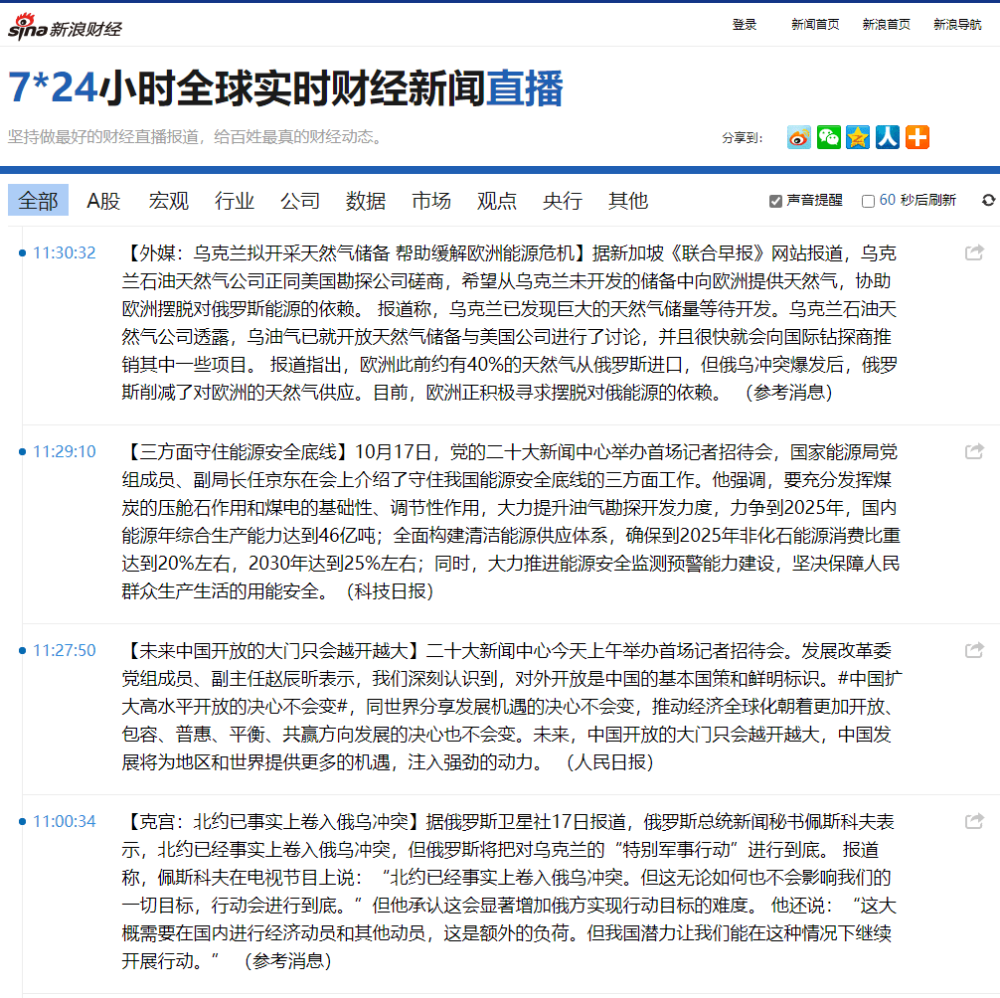
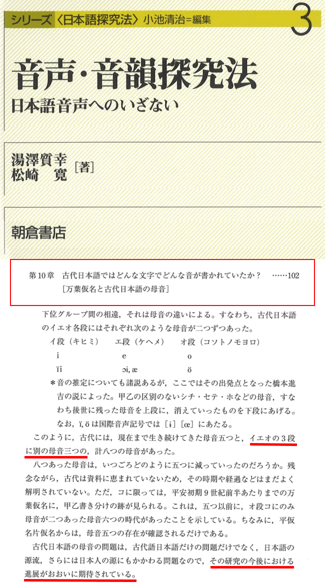

fanhan-inside
前情提要：
囧斋起居注・日记

一言以蔽之：老迈年高的计算机用户肯定反应过来了，当年面对「针式打印机」使用「点阵字体」的各种办公软件，尤其是「文字处理器」之类，在DOS下的界面，不就是「文本编辑器」的样子么？
所以看见自诩始终代表了最先进生产力的擅长用大拇指搓动智能手机屏幕以驾驶历史の五对负重轮奔驰在那十步一岗五步一哨夜不闭户路不拾遗兲子脚下首善之区国际一流和谐宜居之都市中心广场和十里长街之上将不自量力の螳臂挡车之跳梁小丑碾为齑粉的根红苗正忠君爱国童年才俊叫嚣「每个百善の新时代都有大批掉队者，这帮万恶的旧社会余孽已经遭遇“新731部队”骨干投毒下药导致双下肢浮肿且筋骨皮肉刺痛并且饥寒交迫……已经走不动了」的时候，就要考虑到「革命导师圣卡尔の反革命导师团黑格尔等先贤」谆谆教导人民群众们说「历史是螺旋上升的否定之否定」也就是场内四百米跑道上一票下半身肌肉棒子在众目睽睽之下一圈圈绕回原点还美其名为「突破」，或者场外环×自行车赛之类乍一看大批租用昂贵设备的耗材们感慨海阔天空实际上不过是大号瞎驴拉磨而已必将被赛事组委会打回原形。
上面这段措辞比较委婉，直说了吧：目前以「Visual Studio Code」为首的大批「插件架子型文本编辑器の五颜六色纯文本型」用户界面，就是当年的DOS环境下或者如今的怀旧模拟器当中「经典共识の文字处理器工作状态⸺以及部分打印预览」的用户界面。
最起码，把Markdown各种扩展都打开的「源码模式」，就酷似上世纪八九十年代曾经在小范围内流行并获得一致好评的“CCED”字表处理软件，其处理表格的能力要超过同时期的“WPS”，可以类比为运行脚本的「.ipynb」或其它功能类似的环境下「MyST Markdown」之类格式。
说过了「不忘初心牢记使命」，本来就是为了我个人的「富文本」码字内容在本地和各个站点及托管平台之间联机同步的目的，才会关注表现形式。运用「文本编辑器（Text Editor）」当中可通过git等版本管理系统追踪的比特流实现一部分通常运用「文字处理器（Word Processor）」才能实现的效果，方针政策路线计划从来都是明确的。如今看赛博朋克英特纳雄耐尔主义者紧密团结在以W3C为核心的互联网推荐标准中央周围，依托大手情报工学会社提供的开放共享之伎俩，就快要完成了。
总之，在涉及「“下一步”往哪里迈」之类问题的时候，不能使用「走一步看一步」之类耍赖字眼搪塞。
说出这种话的当事人只是在掩饰自己那孤陋寡闻愚蒙等诮的井底之蛙兼不学无术胸无点墨的傻哔形象，还会运用「“海里有人”“海边有人”“手眼通中央军委/政法委”」的人脉勒令枪杆子狼牙棒全面出动还外聘江湖好汉草莽豪杰乃至地痞流氓泼皮无赖担任劳务派遣，在十步一岗五步一哨夜不闭户路不拾遗兲子脚下首善之区国际一流和谐宜居之都大街小巷的现实当中，以及繁荣的简体中文互联网上各大宣传阵地直至十亿网民自留地的自建房当中，全面筛查儿童文学名篇《皇帝的新衣》并以「政治敏感」理由「亦当删去」呢。
fanhan-inside
长话短说，今天「Obsidian 1.0.0」发布⸺说过了因为「日记」是其核心功能所以在丢失过去几年本地草稿的情况下直接挑一个最接近需求的环境继续，曾经的我如同大批前辈和同龄人那样可以使用真・文本编辑器配合命令行工具干活的，如今在日常条件下为了工作效率而没有那个必要而已⸺已经更新了，部分插件和主题还没有与时俱进，目前正在适应中。
最近身体情况堪忧，本来以为手头略微宽裕于是营养能跟得上（实际上是在恶补饥荒两个月后的消耗，众所周知先皮包骨再浮肿并不是什么健康状态）会有好转，但是反而恶化了。之前几天「浑身疼，坐不住」于是几乎啥也没干，坐不住只能躺着也就罢了，上半身出问题了导致无法「如臂使指」于是连调整样式的体力活也搞不定，倒是码字的构思还能在脑壳里推进。
如果说去年11月4日开始的状态是「红条见底」，那么现在已经看不见红条或者说按比例折算不足一个像素于是无法显示了。之前总结过，即便按照个人博客站点更新动态的记录复盘也能判断出2019年是脑力巅峰⸺到处谈笑风生的同时《设定集》重新开始连载⸺并且体力下降没有太多负面影响。而自打去年春节开始，身体情况每况愈下，到11月2-4日完成周边江湖好汉草莽豪杰地痞流氓泼皮无赖放话「出来混要讲信誉，说杀你全家就杀你全家」的既定方针政策路线计划「死光一户口本」上倒数第二个日程安排的时候，已经「走不动了」：
范某截图备份于此

但是当时还在死撑⸺因为外表看不出来，所以不想被人看出来⸺平移还算勉强，上下运动的时候非常费劲，迎面骨那块肉使不上劲导致无法翘起脚面只能耷拉着拖动。而到了今年8月25日半夜断电凌晨出门（于葡萄架社区出行路上遭遇中年妇女迎面挑衅）时已经很难穿上鞋袜了，随后一段时间外观明显，并且症状已经无法掩饰。而步履蹒跚「生理上寸步难行」被周边各色人等（遑论24×7全方位巡查监视无死角的摄像头后的观众朋友和窃听器后的听众朋友）获知，才有大批针对性的「趁我病要我命」相关操作⸺包括但不限于「没有人身自由就没有财产安全」之积极的财政政策和稳健的货币政策⸺最近谈笑风生当中尽量轻描淡写的备份相关情报，此处不再重复。
由于最近一直没有使用之前改装Ubuntu的笔记本（只是偶尔联机备份已经托管的各个repo/vault），于是惦记着立足于现有技术条件和装备尽量运用捉襟见肘的有限资源，这几天再次重装笔记本恢复到2010-2012年技术环境：Win7日语版，（还能装上的）微软全家桶，以及其它部分工具。
这是为了测试的目的，这个（如无意外不会再次折腾的）「保留环境」很合适，因为浏览器渲染页面与操作系统关系不大。或者这么说，只要Google/Mozilla愿意，哪怕Win2K/XP上都能实现当代浏览器最新版本的效果。但是没有必要，因为在赛博朋克英特耐雄耐尔主义者视角看来「重新发明轮子」并不是个好主意，能够调用操作系统和第三方组件提供的经由W3C等权威机构认证的功能，当然拿来主义⸺大手情报工学会社故意不支持则例外，比如微软强推Win10的时候对Win7更新的各种小动作⸺是更好的选择。
而到了Win7终止支持的时间点，绝大部分个人博客站点使用的伎俩在客户端都可以正常显示。例外就是之前提到的今年才获得普遍支持的CSS特性「--font-synthesis」，但是通过精心选择字体而影响不大，况且一直都有「测试默认配置」显示效果的目的。
举个具体的例子，就是最近在「请增加「双倍全角横线」U+2E3A（TWO-EM DASH [⸺]）字符」提到的波折号，W3C推荐的方案就没有获得操作系统与字体制造商的普遍支持，最起码最近码字中使用的高举紧跟字符，在刚配置好的笔记本的浏览器上显示为「豆腐」⸺或许「Google Noto」都没来及支持，还需要进一步确认。
而不那么迫切的需求，比如在「Support for Greek Extended (U+1F00 - U+1FFF) requested」当中提到的扩展希腊字母，已经通过其它方式（专用网络字体）解决了一部分。并且考虑到项目组日理万机无暇周览⸺比如今天本人刚刚收到的消息称「2023Q3」支持简体和繁体中文⸺总有些任务优先级更高而用户更加迫切需要，于是可以暂且保留现状。这种情况下，可以把最初也是迄今为止唯一“权威”的个人博客站点「希帕索斯永垂不朽」之上的所有内容当成素材⸺之前提到过早期博客篇目有「过度样式化」的倾向，那就是用自己的码字内容作为试验品的表现⸺重新设计并实现更加合理且简洁的样式了。
实际上第二个声明为「Blog Plus Style Less
」的个人博客站点「囧斋」就有这种目的，但是针对性并不明显。由于「.less」代码可以通过浏览器加载ECMAScript脚本实时解析，于是保证网络传输数据量最小。而受限于内容（重构之前的部分准备工作），形式也有所限制。
那么再次重构的目标，之前提到了，就是号称最全面且功能最强大的「SCSS」预处理器，真・本地编译为CSS之后再加以运用。或许会再开一个博客试验，目前客观条件下还没有决定。而目的是测试技术性文档发布事宜的「囧斋之書」站点，由于最近已经涉及到「可执行代码的文档」格式及工具相关内容，乃至大批样式（如告示牌“Admonition/Callout”）的适用性，暂且决定搁置。
总之，在已经知道「路在何方」的前提下，目前「路在脚下」的行动，是在笔记本「保留环境」当中通过尽量小的系统配置（包括但不限于网络字体）而正常显示（有必要的话可以大刀阔斧修改的）个人博客内容，而服务的对象则是所有「浏览器前的读者朋友」⸺想必砥砺奋进十年来乃至「连“十九年七闰”都不知道还推算呢」学术公案十三年来甚至上溯到在幽州城区权威机构注册账户四十余年来24×7全方位巡查监视无死角的「摄像头后的观众朋友与窃听器后的听众朋友」肯定会采取针对性「撒谎偷窃诈骗」「暗杀抢劫破坏」军事行动。
顺便，由于身体情况堪忧，才会为了码字而抓紧时间体验生活，比如前几天买了一堆（国产）铁盒雪茄，因为判断「烟斗」等不及了。原则在「没有调查就没有发言权，没有体验就没有码字脸」当中提到了，先解决有无问题，再考虑优劣问题，还要量力而行。
具体到最近「自残型体验」（这次可不是因为开心才抽烟喝酒啥都吃）所针对的场景，在《范版西幻设定集》之十七〈冠由下生乱自上作〉当中，几乎全篇都是。尤其是其中英格兰大手名校毕业生爱尔兰裔情报工作者「馆子里抽烟喝酒耍钱顺便谈论北溪」的场景，也就在眼下有实时效果⸺角色「尼摩船长」的业务也包括黑海（土耳其溪）⸺时过境迁，将来（估计短期内不太可能）即便烟斗到手也未必有如此凑巧的心情和语境了。
顺便补充屎绿配色的国际化大都市「华语第一精日论坛」当中出现的「绿色基因」相关情报兼素材：
范某截图备份于此

相关内容的背景遍布整个《卡壳世界》，而特别的切入点及剧情线，可以参考《范版西幻设定集》之十九〈昔在上圣昭事百神〉，同样几乎全篇都是。类似的体验，就是前一篇日志当中提到的「十九届七中全会的精神立竿见影的反映到囧斋周边环境当中」。至于具体细节，那里没有展开解释，这里也一样。
fanhan-inside
补充情报兼素材「历史の车轮ああああ开始转动吧」：
范某截图备份于此
前情提要：
囧斋随笔
所谓治大国若烹小鲜，我认为其实就是把“历史车轮”视为一堆轮轴杠杆等简单机械的组合，通过分析找到最佳的着力点，然后轻松的揣上一脚使之前进。
然后在包括但不限于「之江临安“原创文学论坛”」「国际化大都市“华语第一精日论坛”」「十步一岗五步一哨夜不闭户路不拾遗兲子脚下首善之区国际一流和谐宜居之都“黄脖子绿帽二代论坛”」都已经关闭公开情报榷场的前夕，备份「他山之石可以攻玉」相关文艺理论：
范某截图备份于此
范某录像备份于此
前情提要：
邦昌時代・別題
这么算下来，四格肯定不够用，四页也玄，四张跨页横幅或许勉强能安排下。可是如果页数再多，每句诗的台词框放在哪里？总不能拆成字吧？如果是动态表现还好点，主角慢慢念诗，还有停顿，同时蒙太奇不停切换。只不过再怎么拖也拖不过几秒钟，镜头切得太碎了还会有凌乱感，信息密度太大导致观众难以实时接收。
到这里可能有读者抱怨「嗤，黑鬼哥布林干啥啥不行，吹毛求疵第一名」。那就得多说几句了。
在《野渡无人舟自横，深山藏古寺》当中已经提到了当年「铁血大送朝」如今的「澳宋」的公务员考试当中就有「命题作画」一项，多半还都是「念两句诗」的方式。所以我总觉得科技昌明民智大开的当代「美术兲才」在一边与时俱进一边嘲笑老迈年高的历史唯物主义の尘埃钦定被后浪以大拇指搓手机方式驾驶的历史の五对负重轮碾为齑粉的情况之下，应该已经掌握了这些「基本功」才对。
就当「合作者」已经画出来了吧，这是《第零话》。
所以见贤思齐，回顾自己的码字内容，在尽可能短的时间内塞入大批线索以体现「回忆」内容，上述引用的「文艺理论与实践」比较恰当。不仅仅是《异闻录》开头，在《设定集》作为开头和序章且具有「前言」功能的第一篇〈只有龙才会说龙语〉当中大批「回忆」片段，也可以如此处理。
然后顺便展开部分与现实紧密相关的细节，重点是「抽烟喝酒（以及啥都吃）耍钱」场景。
在《异闻录》当中，反派主角「多面间谍郭春海」本来就有抽烟喝酒场景，那是按照当代社会的生活条件设定的。
在（手工）卷烟出现之后，（机械）卷烟的发明确实便利许多，当然在当时不出意外的引发了「纯手工打造の烟草精品」与「工业化大生产」之间的真理标准大讨论。与其它几乎所有领域的发展一样，「革命进步」与「反动落后」两个阵营之间展开了你死我活的斗争，到现在的情况人民群众都知道了，「批量制品」已经占领了几乎所有市场份额，但是并没有将「情怀古董」彻底赶尽杀绝。
理由当然「有调查就有发言权」「有体验才有码字脸」的大批有识之士都已经说过很多遍了⸺前提就是「任何科技进步都会率先应用在军事领域」不必啰嗦⸺而具体就事论事则是「任何科技乃至“真理”都有其适用范围」⸺除了数学之外竟不能发现「绝对真理」之所在⸺所以「卷烟抽起来都是纸味」「至少用烟叶子卷烟丝吧」的相对真理，也在部分范围内获得部分消费者的认同。现在的盒装（尺寸与卷烟相近的又细又短的）普通雪茄也是机械化生产的，同样没有彻底解决作为部分加勒比海国家出口创汇之重要来源的（又粗又长的）传统雪茄吖。
由于「成瘾」现象本身从全人类角度观察并不是个离散变量，最起码要考虑到「因人而异」的生理上的个体差别，所以「灰色地带」才是各方势力争夺的重点，不仅有物理原因，还有经济原因⸺比如「电子烟」相关的税务问题⸺「法无禁止即可为」与「支部要建在铁杆庄稼田间地头上」之间的斗争，持续了若干年直到今天开会「抡板凳搞民主一翻两瞪眼」之后是否会出现「输了，棒子不交，本子不交，妈的什么都不交」然后翻拍划时代大作「震惊中外の乒乓外交と冚家富贵」高清复刻版，还得看十步一岗五步一哨夜不闭户路不拾遗兲子脚下首善之区国际一流和谐宜居之都城乡结合部吉普赛社区军休所哥布林是否当众朗诵三句半。
个人亲身经历在《设定集》注释〔５６〕当中提到了：
卡壳世界・注释
这里插一句，也是与我那「酒鬼」头衔有关，全称是「精神病仆街写手不入流码农数学渣缩卵怂货窝囊废宅男黑客活雷锋烟枪酒鬼」。虽然现在抽烟喝酒啥都吃，但是我并非成瘾体质，烟想抽就抽想不抽就不抽，酒想喝就喝想不喝就不喝。
之前也有色目灌水机喷过了，用的还是「马克・吐温」名言「没有比戒烟更容易的事了，我都戒过二百多次了」。而我的还击就是亲身经历：我只戒过一次烟，这一次就是七年半，从2008年初到2015年中。当时戒烟是惦记着结婚生孩子，也是我中华兲朝上国那发达的伦理学传统中「三十而有室」的教义，后来抽烟则是因为政治和意识形态斗争。
酒也戒过，从2009年四月体检发现中度脂肪肝开始，到2010年一月，总共七个半月。所以，打脸这种事不需要刻意干点什么，言行举止吃喝拉撒睡「从心所欲不逾矩」就够了，当然在色目灌水机炮制的舆论当中肯定还是造谣污蔑栽赃陷害颠倒黑白混淆是非，我自己说了不算。
当时在「即便卷烟当中也有夹私货的产品还把叶子印在烟盒上」的情况下，曾经面向不明真相的人民群众（除在有关部门临时工运作人脉协助落户的洗白染红的晋绥陕甘宁毒贩及其家属与后裔外）复述有识之士提出的简单标准：看「有法可依有法必依执法必严违法必究」当中是否白纸黑字规定不能驾驶机动车。
现在众所周知「酒驾」入刑，「烟驾」可没有，但是「抽了大麻（产生幻觉）驾驶机动车」仍然类似「酒驾」。由于我中华兲嘲上国「有法可依有法必依执法必严违法必究」实践当中⸺即便被「周永康v2.0或曰富歇转世灵童」这样那样过⸺吸毒本身已经入刑了，所以「毒驾」相关情报素材，还得看大洋彼岸或大陆彼端那些「软毒品合法化」国家和地区的司法实践。
但这不是说没有境内素材可供引用，在《范版东幻异闻录》题外话〔60〕邦昌時代の伤寒马力と阿拉伯茶当中提到了：「从2014年1月1日开始才把阿拉伯茶列为第一类精神药品进行管制，属《刑法》、《禁毒法》所指的毒品范围」「也就是说，2009年当时境内流行确实不违法」。
我说「十九届七中全会精神立竿见影的体现到囧斋周边」的原因之一，就是2009年在清真馆子之内的经历，当时确实有「清真人」亲自使用并推销「法无禁止即可为」的中东特色精神药品。而当时的诡异气氛于类似场合再次出现⸺就在10月13日当天，我亲眼见到了相貌装扮酷似谁的什么角色，涉及「走私毒品、人口、军火の“家学渊源”」，不解释⸺即便在古拉格北里各色人等形迹可疑至少十年的环境中，仍然令我感到更加诡异。
范注：
昨天下午于酗酒中与店方谈笑风生，略微涉及了此类“敏感”话题，包括但不限于「宗教律法与世俗法律」「抛开政治和意识形态不提，纯粹科学角度认定的“合法”与否应该是什么样」。这是我在有过相关经历之后的正常反应，揣着明白装糊涂的色目情报掮客不能用那些「温室中的绿色花朵」或曰啥也没见过啥也没经历过的成天沐浴着阳光月光的「色目栋梁胚子」的条件反射类比。
这些情节，在《异闻录》当中已经是完成时，而在《设定集》当中则是进行时。已经在注释中展开解读过「德国啤酒纯净法」出台的背景就是「啤酒巫师掺杂软毒品」，而绿皮书没来及写禁烟（乃至古柯）是因为当时没发现百善の新大陆，而海洛因曾经是拜耳的拳头产品（但德意志社会当时可以做到“自我纠错”），柯南道尔写明有军医看护的名探侦烟酒不沾但就是抽可卡因还视为「健康、理性的选择」。
直说就是，不能用当时的情况套用到现在，不能用架空的场景解读现实，相信「浏览器前的读者」都有分辨能力，而「摄像头后的观众朋友与窃听器后的听众朋友」及其豢养的动辄于囧斋窗外狂吠之走狗团⸺揣着明白装糊涂的色目情报掮客、娱乐至死の色目逗哔以及为「可萨汗国」倒行逆施保驾护航的色目混混鸡鸣狗盗之徒⸺例外。
fanhan-inside
补充权威机构认证的情报兼素材：
范某截图备份于此

备份权威机构认证的权威学术研究成果：
范某截图备份于此

长话短说，（参考前一篇日志）已经获知「权威机构《人民日报》认证的权威机构“中统之声”的权威发言『美国人民的好总理到底是做什么的』」在全世界不权威的人民群众看来属于「真・傻哔」的表现⸺我相信（包括但不限于自己在内的）大批繁荣的简体中文互联网上资深用户的码字内容境外没人翻译，但是《人民日报》这种权威媒体恐怕全世界各个国家和地区都有专门的权威机构负责翻译，还能实时生成简报内参供当地权威机构阅览呢⸺那么后来连权威性较低的《新闻联播》都懒得看了，遑论大批自称权威还有权威机构认证「VIP」但没有权威机构替其言论背书（或曰“强力部门提供武德支持”）的微博微信公众号百家号乃至其它「多频道网络媒体各办公室各工位担当」了。
于是在「没有时间⸺伽罗华」更没有体力的现在，按照「料敌从宽」「不惮以最大的恶意揣测」「未算胜先算败」之类职业习惯指导下，抓紧时间完成包括但不限于码字在内的既定方针政策路线计划，以「改版进行时」优先级顺序审核通过指定语言代码呈现默认中文字体并辅之以「Noto/Source风格（东亚）标点符号」字体略微改善了页面显示状况之后，举一反三触类旁通判断其它大手情报工学会社、非盈利组织和个人提供的专业级别的网络字体应该不会出现意料之外的技术问题，那么就应该考虑到（为了个人码字需求而）自制的网络字体了。
前情提要：
按照职业习惯，其中相关细节需要权威机构认证的权威档案⸺也就是通常于脚注部分出现或者直接窜入正文的「参考文献」⸺背书，而之前构思及实践时只使用了网络资源，其中列出的实体资料手头还没有并且找不到电子版。于是相关「web版→文库版」的过程一直拖到了现在，也有权威机构活动的影响（方案定稿于2021年6月19日凌晨，而同年6月23日晚间就与人民警察在亲切友好的氛围中莫名其妙的谈笑风生了几个小时）。
所以既然学界还没有定论⸺虽然已经有「i」「e」「o」段有并入的其它元音之阶段性结论，但是并没有体现到本位面近现代日语音系演变过程中⸺那么按照历史上「兰学」流行之后产生「趋同进化」至今的三个「德式」变元音「ä」「ö」「ü」进行设定⸺不考虑现实学术纠纷，仅在【架空】中作为背景⸺应该足够严谨。正好制定方案当时我就是这么设定的，于是不做修改沿用可也。
其它牢骚略过，参考「连“十九年七闰”都不知道还推算呢」学术公案，就连「少数民族同胞」睁眼说瞎话罔顾权威学术机构认证过的天文学考古学结论和民间沿用的传统共识对我中华兲嘲上国历史真相加以歪曲和误读之后得出的结论都有权威机构《人民文学》及权威赞助商「茅台集团」提供人财物力支持，那么在学界尚无定论的领域进行严谨的演绎推理，一定会遭到比起砥砺奋进十年来囧斋周边群魔乱舞乌烟瘴气暗无天日更加变本加厉的江湖好汉草莽豪杰地痞流氓泼皮无赖在大手情报机构扶持下的「撒谎偷窃诈骗」「暗杀抢劫破坏」系列重要特别军事行动干扰。
这就是我于目前⸺历史转折中的范狂夫⸺的处境。